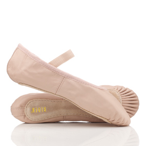

Seizoen 20-21
 Vanaf maandag 31 augustus start ons nieuwe dansseizoen. Een Gratis proefles doen? U bent van harte welkom! Neem graag eerst even contact op voor een proefles.
Vanaf maandag 31 augustus start ons nieuwe dansseizoen. Een Gratis proefles doen? U bent van harte welkom! Neem graag eerst even contact op voor een proefles.
Alle leerlingen mogen zich weer opnieuw inschrijven voor het nieuwe seizoen.
inschrijven voor het nieuwe seizoen 2020-2021 : inschrijfformulier
De nieuwe tarieven voor 20-21 vindt u onder het kopje 'Hoeveel'
Het nieuwe lesrooster vindt u onder het kopje 'Wanneer'
Kleding
 Denkt u ook weer aan het kleding voorschrift? Bij de balletwinkel 'Podium Nijmegen' weten ze ook precies wat je nodig hebt en krijg je als leerling 10% korting op je dans outfit. Mocht je liever even snuffelen in de doos met 2ehands spulletjes? dat kan, voor een klein bedrag steun je de Babs kostuumzolder en heb je zelf een koopje. Op=Op!
Corona Virus
 Super dat we het seizoen weer kunnen dansen in de studio en dat willen we natuurlijk graag zo houden! let dus een beetje op elkaar en denk aan de afstand van 1,5 meter ( iedereen vanaf 13 jaar)
We hanteren de Corona maatregelen en zorgen voor een gedesinfecteerde barre, handgel en gemarkeerde vakken op de vloer. Help ons mee en zorg dat je al omgekleed aankomt en kom liefst alleen en als dat niet kan met zo min mogelijk mensen naar de studio. We houden het samen gezond en gezellig.
Bedankt en tot dans!
Super dat we het seizoen weer kunnen dansen in de studio en dat willen we natuurlijk graag zo houden! let dus een beetje op elkaar en denk aan de afstand van 1,5 meter ( iedereen vanaf 13 jaar)
We hanteren de Corona maatregelen en zorgen voor een gedesinfecteerde barre, handgel en gemarkeerde vakken op de vloer. Help ons mee en zorg dat je al omgekleed aankomt en kom liefst alleen en als dat niet kan met zo min mogelijk mensen naar de studio. We houden het samen gezond en gezellig.
Bedankt en tot dans!
Open Dag
 Ivm de Corona maatregelen gaat de OpenDag op 6 september helaas niet door, het 'Open' karakter van zo'n dag is nu, door alle maatregelen, niet vorm te geven. Zodra het weer kan plannen we een nieuwe Opendag.
Ivm de Corona maatregelen gaat de OpenDag op 6 september helaas niet door, het 'Open' karakter van zo'n dag is nu, door alle maatregelen, niet vorm te geven. Zodra het weer kan plannen we een nieuwe Opendag.
BalletPuzzel
 ⬆⬆⬇⬇⬅➡⬅➡ ba
⬆⬆⬇⬇⬅➡⬅➡ ba